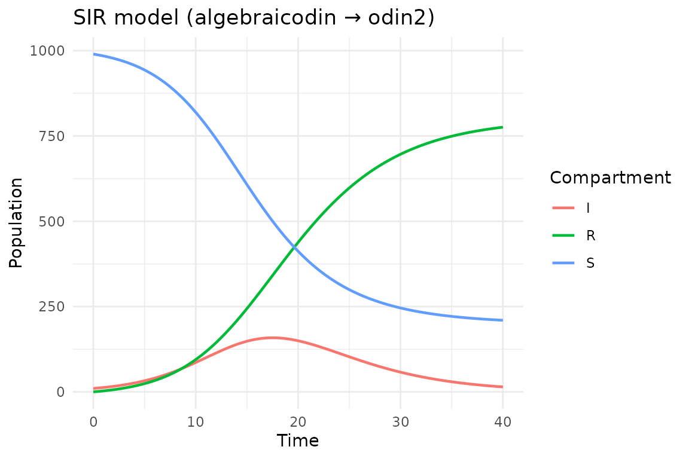

Getting started with algebraicodin
Simon Frost
2026-03-31
Source:vignettes/algebraicodin.Rmd
algebraicodin.RmdIntroduction
algebraicodin uses applied category theory to build epidemiological models compositionally, then generates odin2 code for high-performance simulation via dust2. Instead of writing ODE equations by hand, you define a Petri net—a bipartite graph of species (compartments) and transitions (processes)—and the package derives the equations automatically.
This vignette walks through a basic SIR (Susceptible–Infectious–Recovered) model, comparing the algebraic approach with hand-written odin2 code.
library(algebraicodin)
#>
#> Attaching package: 'algebraicodin'
#> The following objects are masked from 'package:base':
#>
#> %o%, %x%Defining a Petri net
A labelled Petri net describes a reaction network with named species and named transitions. Each transition has input arcs (consumed species) and output arcs (produced species).
For an SIR model, we have:
- Species: S (susceptible), I (infectious), R (recovered)
-
Transitions:
-
inf: S + I → I + I (infection: one S and one I produce two I) -
rec: I → R (recovery)
-
sir <- labelled_petri_net(
c("S", "I", "R"),
inf = c("S", "I") %=>% c("I", "I"),
rec = "I" %=>% "R"
)We can inspect the structure:
species_names(sir)
#> [1] "S" "I" "R"
transition_names(sir)
#> [1] "inf" "rec"
transition_matrices(sir)
#> $input
#> inf rec
#> S 1 0
#> I 1 1
#> R 0 0
#>
#> $output
#> inf rec
#> S 0 0
#> I 2 0
#> R 0 1
#>
#> $stoichiometry
#> inf rec
#> S -1 0
#> I 1 -1
#> R 0 1The stoichiometry matrix shows the net change in each species for each transition. For infection, S decreases by 1 and I increases by 1; for recovery, I decreases by 1 and R increases by 1.
Visualising the Petri net
The plot_petri() function renders the Petri net as a
bipartite graph via DiagrammeR.
Species appear as blue circles and transitions as orange boxes:
plot_petri(sir)Generating odin2 code
The pn_to_odin() function translates the Petri net into
odin2 DSL code. The default type is "ode" (continuous
deterministic):
sir_code <- pn_to_odin(sir, type = "ode")
cat(sir_code)
#> ## Auto-generated by algebraicodin
#>
#> ## Parameters
#> inf <- parameter()
#> rec <- parameter()
#>
#> ## Initial conditions
#> S0 <- parameter()
#> I0 <- parameter()
#> R0 <- parameter()
#>
#> initial(S) <- S0
#> initial(I) <- I0
#> initial(R) <- R0
#>
#> ## Transition rates
#> rate_inf <- inf * S * I
#> rate_rec <- rec * I
#>
#> ## Derivatives
#> deriv(S) <- -rate_inf
#> deriv(I) <- rate_inf - rate_rec
#> deriv(R) <- rate_recThis generates mass-action kinetics where each transition rate is the product of the rate constant and the concentrations of input species.
Comparison with hand-written odin2
Here is the equivalent model written directly in the odin2 DSL:
sir_handwritten <- "
## Parameters
inf <- parameter()
rec <- parameter()
## Initial conditions
S0 <- parameter()
I0 <- parameter()
R0 <- parameter()
initial(S) <- S0
initial(I) <- I0
initial(R) <- R0
## Mass-action rates
rate_inf <- inf * S * I
rate_rec <- rec * I
## Derivatives
deriv(S) <- -rate_inf
deriv(I) <- rate_inf - rate_rec
deriv(R) <- rate_rec
"The generated code is structurally identical to the hand-written version. The algebraic approach guarantees that the stoichiometry is internally consistent—every molecule consumed by a transition is accounted for in the outputs.
Running the model
We can compile and run the generated odin2 code using dust2:
gen <- odin2::odin(sir_code)
#> ✔ Wrote 'DESCRIPTION'
#> ✔ Wrote 'NAMESPACE'
#> ✔ Wrote 'R/dust.R'
#> ✔ Wrote 'src/dust.cpp'
#> ✔ Wrote 'src/Makevars'
#> ℹ 13 functions decorated with [[cpp11::register]]
#> ✔ generated file cpp11.R
#> ✔ generated file cpp11.cpp
#> ℹ Re-compiling odin.system840d9d16
#> ── R CMD INSTALL ───────────────────────────────────────────────────────────────
#> * installing *source* package ‘odin.system840d9d16’ ...
#> ** this is package ‘odin.system840d9d16’ version ‘0.0.1’
#> ** using staged installation
#> ** libs
#> using C++ compiler: ‘g++ (Ubuntu 13.3.0-6ubuntu2~24.04.1) 13.3.0’
#> g++ -std=gnu++17 -I"/opt/R/4.5.3/lib/R/include" -DNDEBUG -I'/home/runner/work/_temp/Library/cpp11/include' -I'/home/runner/work/_temp/Library/dust2/include' -I'/home/runner/work/_temp/Library/monty/include' -I/usr/local/include -DHAVE_INLINE -fopenmp -fpic -g -O2 -Wall -pedantic -fdiagnostics-color=always -c cpp11.cpp -o cpp11.o
#> g++ -std=gnu++17 -I"/opt/R/4.5.3/lib/R/include" -DNDEBUG -I'/home/runner/work/_temp/Library/cpp11/include' -I'/home/runner/work/_temp/Library/dust2/include' -I'/home/runner/work/_temp/Library/monty/include' -I/usr/local/include -DHAVE_INLINE -fopenmp -fpic -g -O2 -Wall -pedantic -fdiagnostics-color=always -c dust.cpp -o dust.o
#> g++ -std=gnu++17 -shared -L/opt/R/4.5.3/lib/R/lib -L/usr/local/lib -o odin.system840d9d16.so cpp11.o dust.o -fopenmp -L/opt/R/4.5.3/lib/R/lib -lR
#> installing to /tmp/RtmpE3erlJ/devtools_install_25e674fe14f7/00LOCK-dust_25e63b39dbf3/00new/odin.system840d9d16/libs
#> ** checking absolute paths in shared objects and dynamic libraries
#> * DONE (odin.system840d9d16)
#> ℹ Loading odin.system840d9d16
pars <- list(inf = 0.0005, rec = 0.25, S0 = 990, I0 = 10, R0 = 0)
sys <- dust2::dust_system_create(gen, pars, n_particles = 1)
dust2::dust_system_set_state_initial(sys)
t <- seq(0, 40, by = 0.1)
y <- dust2::dust_system_simulate(sys, t)
df <- data.frame(
time = rep(t, 3),
value = c(y[1, ], y[2, ], y[3, ]),
compartment = rep(c("S", "I", "R"), each = length(t))
)
library(ggplot2)
ggplot(df, aes(time, value, colour = compartment)) +
geom_line(linewidth = 0.8) +
labs(title = "SIR model (algebraicodin → odin2)",
x = "Time", y = "Population", colour = "Compartment") +
theme_minimal()
Using deSolve directly
For quick exploration without C++ compilation, the
vectorfield() function generates a pure-R ODE function
compatible with deSolve:
library(deSolve)
vf <- vectorfield(sir)
state <- c(S = 990, I = 10, R = 0)
parms <- c(inf = 0.0005, rec = 0.25)
out <- ode(state, t, vf, parms)
head(out)
#> time S I R
#> [1,] 0.0 990.0000 10.00000 0.0000000
#> [2,] 0.1 989.4990 10.24790 0.2530877
#> [3,] 0.2 988.9859 10.50167 0.5124432
#> [4,] 0.3 988.4603 10.76146 0.7782199
#> [5,] 0.4 987.9221 11.02737 1.0505676
#> [6,] 0.5 987.3708 11.29955 1.3296410Summary
| Approach | Pros | Cons |
|---|---|---|
| algebraicodin | Compositional; automatic stoichiometry; multi-target | Abstraction overhead for simple models |
| Hand-written odin2 | Direct control; familiar syntax | Manual bookkeeping; error-prone for large models |
| deSolve | No compilation needed; immediate | Slower for large simulations; pure R |
For small models, the approaches are essentially equivalent. The
power of algebraicodin becomes clear when composing models from reusable
parts (see vignette("composition")) or stratifying by age
or risk groups (see vignette("stratification")).